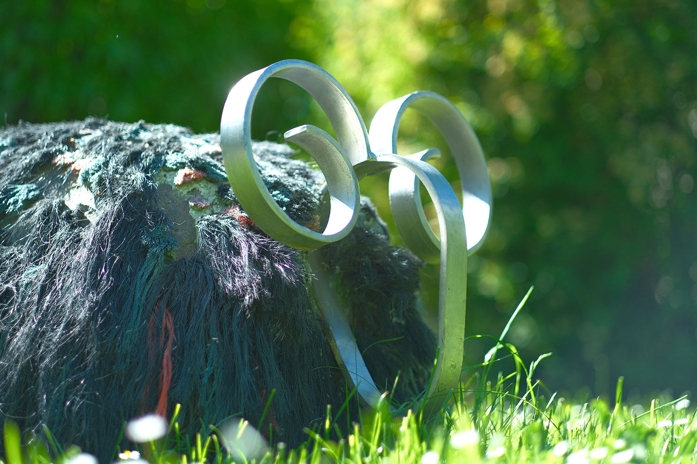
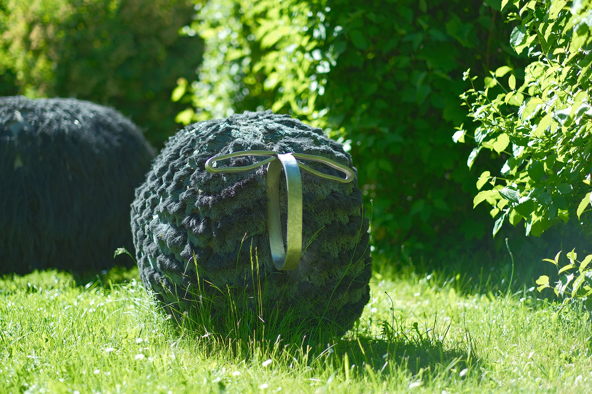
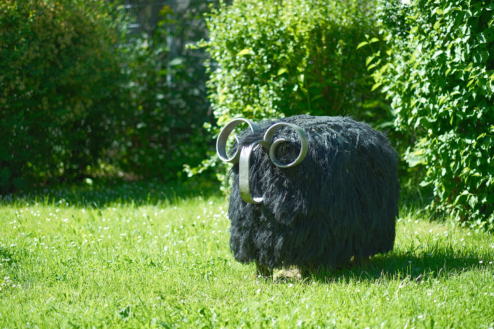
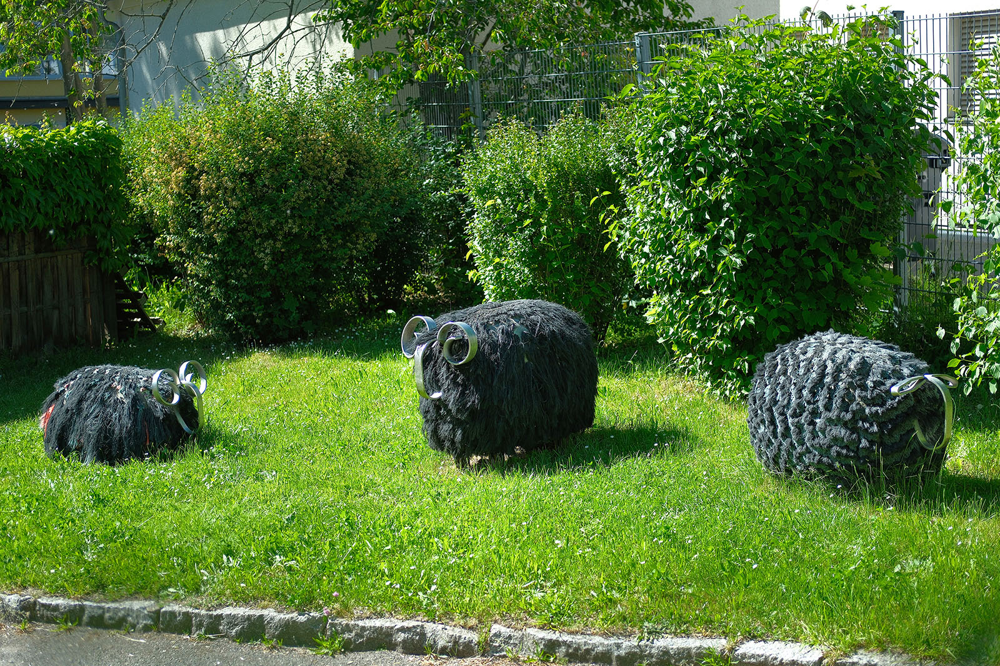

Recherche und Werkbeschreibung: Roman Pilz. Text und Fotografien wechseln sich wie in einem Magazin ab. Ein Klick auf ein Bild öffnet die Großansicht.
Die Tierfiguren "Schwarzes Kurzhaarschaf" und "Schwarzer Widder" wurden von Rainer Maria Schubert 1985 entworfen und Ende der 1980er Jahre mehrfach hergestellt.
Die drei Einzelfiguren sind zugleich als Schmuck und Spielgerät konzipiert und sind hier als Gruppe in einer von der Stadt Chemnitz betriebenen Kindertagseinrichtung aufgestellt. Die Figuren begrüßen die Kinder und Eltern am straßenseitigen Eingang zum Gelände und locken so vor allem die kleinsten und neugierigsten Besucher in das Areal.
Landschaft mit Schafen
Die Plastik „Drei Schafe“ (1987) von Rainer Maria Schubert an der Waisenstraße
Die Körper der Herdentiere sind aus massivem Beton gegossen: Der Kopf ist minimalistisch gestaltet – bei den Widdern als Silhouette aus geschweißtem und gebogenem Bandstahl mit spiralförmig gefundenen Hörnern, beim Schaf mit flachliegenden, lanzettförmigen Ohren. Der glatte Edelstahl tritt dabei in Kontrast zu den borstigen und zotteligen Körpern der Tiere.

Ein Widder liegt auf dem Boden und ist so leichter als Reittier zu nutzen. Es folgt ein weiterer, stehender Widder, der quer zu den beiden anderen Tieren steht, sowie das schwarze Schaf. Das Fell der Tiere ist aus Polyurethanseilen gestaltet, die fest in den Betonguss eingelassen sind. Das Schaf ist kurz geschoren, während das Fell des Widders lang am kompakten Körper herunterhängt.

Die Tiere animieren nicht nur zum Streicheln, Klettern und Spielen, sondern bilden durch ihre verschiedenartigen Materialien und Texturen auch ein sinnlich erfassbares Objekt.

Landschaft mit Schafen
Die Plastik „Drei Schafe“ (1987) von Rainer Maria Schubert an der Waisenstraße
